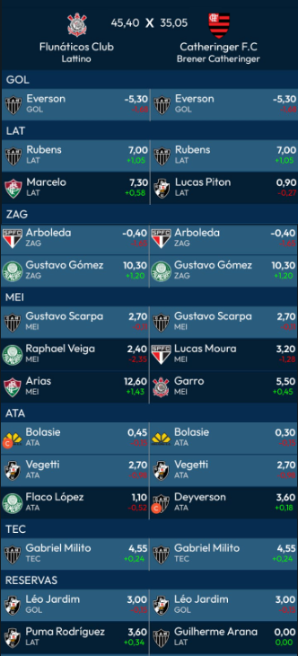
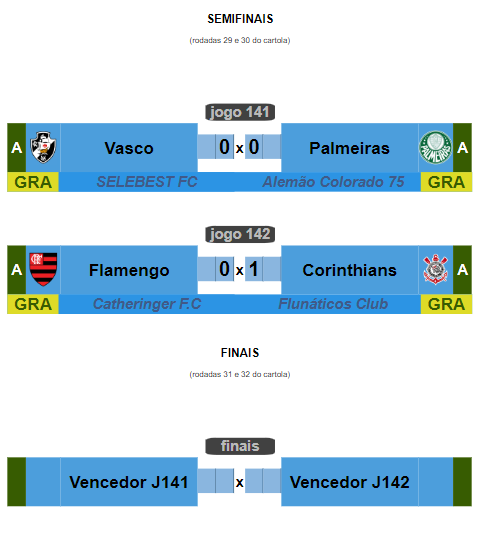

Campeonato de Cartola
A vitória no cartola é o sucesso do seu time!

Redação Cartola - 08/10/2024 - 10h35min
Em rodada de baixíma média de pontos (42), Corinthians não precisou ir além dos 45,4 para garantir vitória pelo placar mínimo (1x0), uma vez que o Flamengo do "Catheringer F.C", treinador campeão da Libertadores de 2022, registrou apenas 35.05, restando com mais de 10 pontos de diferença em relação aos comandados do "Flunáticos Club"
Com o resultado, vantagem do empate passa a ser a favor do Corinthians, enquanto que ao Flamengo do "Chatheringer F.C", apesar da pressão por uma vitória no duelo da volta, a classificação será resolvida com vitória com diferença mínima de gols, já que, em caso de empate nos critérios, conforme a regra, passa equipe de maior grandeza, seguido do que estiver em divisão mais qualificada e, por último, o de melhor classificação no campeoanto Nacional. Sendo os clubes de mesmo porte (grandes) e pertencentes à mesma divisão nacional (elite), a vantagem será do Flamengo, quinto colocado da Elite, com 43pts, enquanto o Corintians é o 11º, com 38pts.
Na outra "perna" das semifinais, Vasco da Gama, atual líder do Campeonato Nacional, comandado pelo "SELEBEST FC" teve pontuação acima do Palmeiras do "Alemão Colorado 75", (50.85 vs 46), mas não o suficiente para constituir superioridade no placar (pontuando abaixo dos 60 pontos, time só faz gol se ficar com pontuação de 10, ou mais, acima do clube adversário). Mesmo não tendo conseguido transformar a melhor "performance" em bola na rede, o empate foi um bom negócio para o Vasco, que joga apenas por um empate no jogo da volta, uma vez que o Vasco é o líder do Campeonato Nacional , com 50pts, contra os 42pts do Palmeiras, na sexta colocação. 